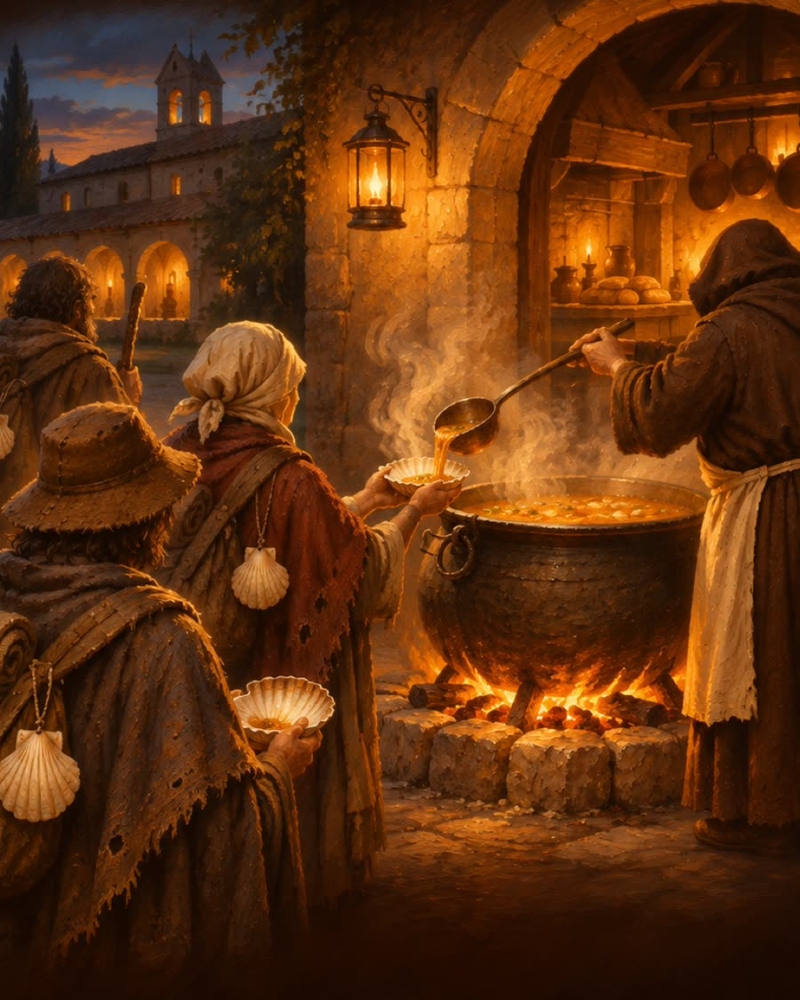
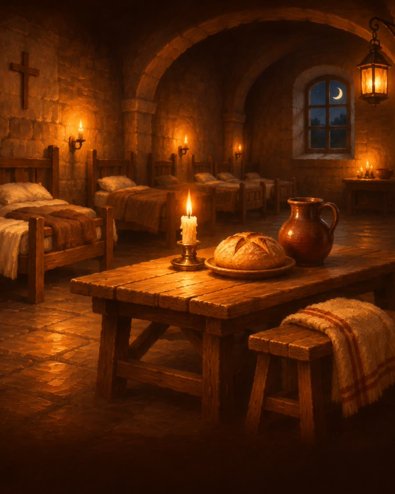
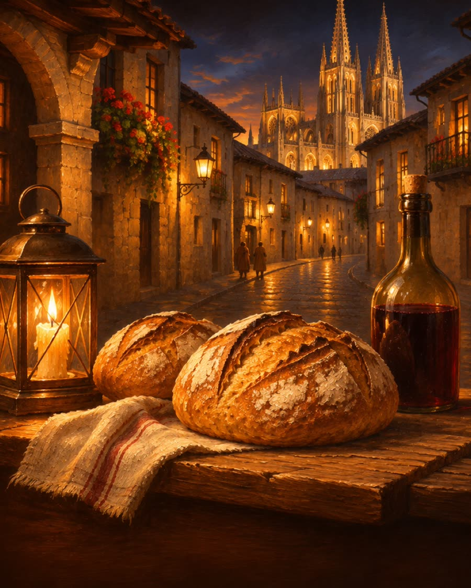
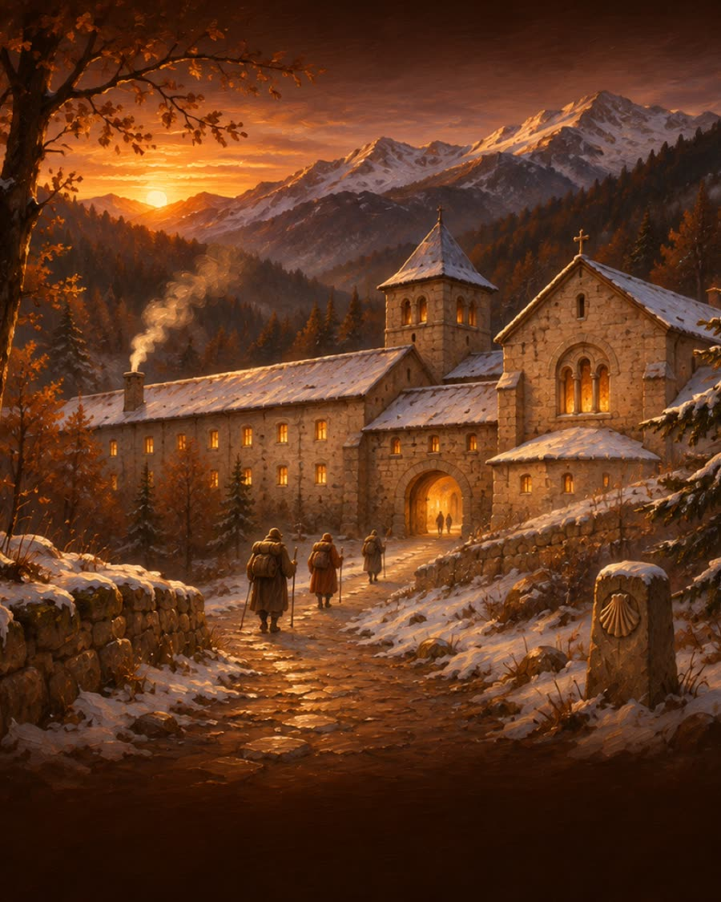
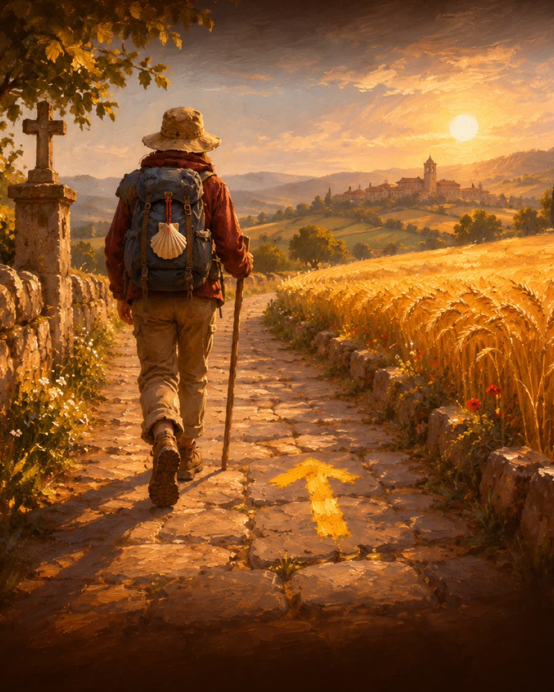
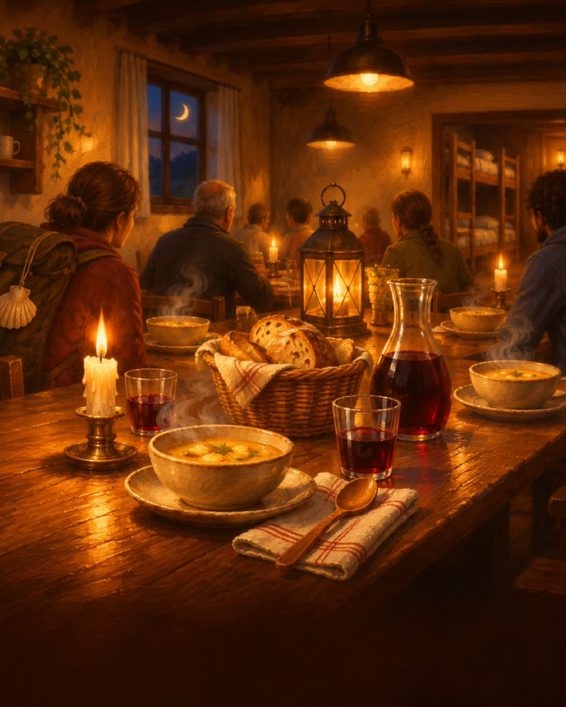

순례자의 한끼한밤
순례자의 한끼한밤순례길 걷는 사람들,
가방에 왜 가리비를 달고 다닐까요?
산티아고 순례길을 걷다 보면 거의 모든 배낭에 흰 가리비 껍데기가 하나씩 매달려 있습니다. 저도 32일 내내 배낭에 달고 걸었어요. 그때는 그냥 "순례자 표시" 정도로만 알았습니다. 그런데 이 껍데기, 원래는 장식이 아니라 그릇이었다는 이야기가 있습니다.
순례자 가방의 가리비
껍데기 하나로 받은 한 끼
중세 순례자들은 길가 수도원에 들르면 이 껍데기를 내밀어 수프나 물을 받아 마셨다고 전해집니다. 런던 박물관 같은 곳에서도 이렇게 소개하는데, 중세 기록에 딱 적혀 있는 건 아니라서 "그랬다고 한다" 정도로 들어 두시면 좋겠어요. 그래도 손바닥만 한 껍데기에 따뜻한 수프 한 국자, 그림이 그려지지 않나요?

천 년 전 순례자의 잠자리
그럼 그 시절 순례자들은 어디서 잤을까요. 길 곳곳에 '순례자 병원'이 있었습니다. 이름은 병원이지만 아픈 사람만 가는 곳이 아니었어요. 지친 순례자에게 잠자리와 빵, 와인을 그냥 내주던 곳이었습니다. 영어 hospital과 같은 뿌리의 말로, 원래 '손님을 맞는 곳'이라는 뜻이 담겨 있어요.

부르고스에서 이틀 동안 받은 빵.
와인은 반 리터가 따라왔다고 합니다.
대성당이 있는 도시 부르고스에서는 순례자가 이틀 동안 빵 약 570그램, 고기, 와인 반 리터쯤을 받았다는 기록이 전해집니다. 공짜로 먹고 자며 걷는 길, 그게 중세 순례길이었어요.

피레네 산속 수도원의 2만 5천 끼
프랑스에서 피레네 산을 넘으면 처음 만나는 마을이 론세스바예스입니다. 제가 비바람 속에 하루 만에 넘어 도착했던 그곳이에요. 이 마을 수도원은 1660년 한 해 동안 순례자에게 2만 5천 끼를 나눠 줬다고 전해집니다. 와인, 수프, 빵, 고기를 주고 고기를 먹지 않는 기간에는 생선과 달걀을 줬다고 해요.

한눈에 보는 순례자의 밥상
- 중세
길가 수도원에서 가리비 껍데기로 수프와 물을 받음 (전해지는 이야기)
- 중세
순례자 병원에서 잠자리, 빵, 와인을 무료로 받음
- 부르고스
이틀에 빵 약 570g, 와인 반 리터
- 1660
론세스바예스 수도원, 2만 5천 끼를 나눔 (전해지는 기록)
- 지금
알베르게에서 모르는 순례자끼리 한 식탁에 앉음
2025년, 저의 32일
저는 2025년에 프랑스 생장에서 산티아고까지 32일을 걸었습니다. 이제 공짜 밥은 없지만, 알베르게(순례자 숙소)는 여전히 싸고 순례자 메뉴도 있어요. 기념품까지 다 합쳐서 하루 6만 원쯤 썼습니다.

생장에서 산티아고까지 제가 걸은 날.
배낭엔 내내 가리비가 달려 있었습니다.
제일 신기했던 건 저녁 식탁이었어요. 알베르게에선 처음 보는 사람들끼리 한 식탁에 둘러앉아 빵을 나누고 와인을 따릅니다. 말이 잘 안 통해도 다 같이 먹어요. 천 년 전 순례자 병원의 식탁도 아마 이런 모습이었을 겁니다.

그래서 순례자 가방엔
오늘도 가리비가 달려 있어요.
🇬🇧 For pilgrims passing by
Why do Camino pilgrims hang a scallop shell on their backpacks? Medieval pilgrims are said to have used the shell as a bowl to receive soup and water at monasteries along the way (museums such as the London Museum tell this story, though medieval records are thin). Pilgrim hospitals gave free beds, bread and wine. In Burgos a pilgrim reportedly received about 570 g of bread and half a litre of wine for two days, and the monastery of Roncesvalles is said to have served 25,000 meals in 1660. I walked the Camino Francés for 32 days in 2025, and in the albergues strangers still share one table.
📚 참고한 자료
- London Museum, 중세 순례자 가리비 이야기 (그릇으로 쓴 이야기는 중세 원문 증거가 부족해 '전해진다'로 적었습니다)
- Pilgrimaps, 중세 순례자 병원 / American Pilgrims on the Camino, 순례자의 음식
- 부르고스 배급량과 1660년 론세스바예스 2만 5천 끼는 2차 자료라 '전해진다'로 적었습니다
- 32일·하루 경비: 2025년 제 순례길 기록
🍽️ 한끼한밤 이야기
- 1화 · 떡볶이가 빨개진 건, 포르투갈 때문?
- 2화 · 400살 포르투갈 빵, 카스텔라
- 3화 · 에그타르트, 189년째 비밀
- 4화 · 순례자가 천 년 동안 가리비를 단 이유 (지금 읽는 글)
- 5화 · '빵'은 포르투갈 말
- 6화 · 노란 화살표는 신부님이 그렸다
- 7화 · '덴푸라'는 일본말이 아니다
- 8화 · 순례길의 진짜 끝, 피스테라 0km
🥾 순례길 연재도 있어요
🕯️ 오늘 밤 이야기는 여기까지.
다음 이야기는 우리가 매일 쓰는 말 속의 포르투갈, '빵'입니다.